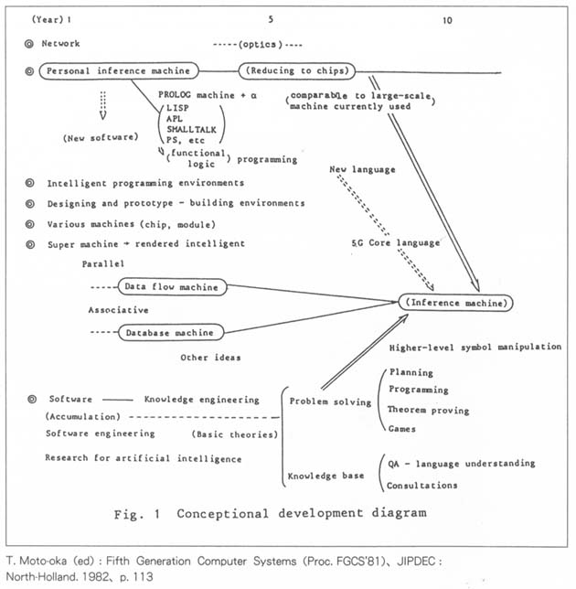

ＦＧＣＳ１２年の軌跡と成果
ＩＣＯＴ・研究所所長 ／ 渕 一博
ＦＧＣＳ’８１からの１２年
本日はＦＧＣＳ’９２のために、皆様、多数ご参加い ただきまして誠に有り難うございます。
私どもは「第五世代コンピュータ」の研究プロジ ェクトを１０年計画ということで進めてまいりまし た。実は、ちょうど１０年前の今日、私どもの研究所が発 足しております。ということで、プロジェクトが 実質的にスタートして今日でちょうど１０年になるわけ であります。
この機会に私どもの１０年の研究成果を皆様に見て いただこうというのがこの国際会議の第一の目的 であります。それと同時に、未来のコンピュータ、 情報処理技術の将来を目指して、世界中の各地で もさまざまな意欲的な研究が進められています。ＦＧＣＳ に関連するそれらの先進的研究の発表と交流の場 を提供するのがもう一つの目的であります。
さて、私はこのプロジェクトの技術的な目標を 端的に表すキーワードとして「並列推論」という 言葉を使ってきております。従来のコンピュータ 技術の枠組みを越えた新しい技術は何かというこ とを考えたとき、そこでは「並列推論」という技 術が中核になるであろうというのが私たちの想定 であります。
私はこのことをこの１０年来、機会あるごとにくり 返しご説明してまいりました。このことを何度も繰 り返しているのは、もちろんその重要性をアピー ルしたいからでありますが、もう一つ、裏の事情 もあるわけです。
というのは、プロジェクトの当初にかもし出さ れたものですが、プロジェクトに対するある種 の過大なイメージともいうべきものがありまして、 これが意外に根強く、いまだに、残りつづけてい るようだからであります。例えば、人工知能（ＡＩ） の難間を１０年で片付けようとしているとか、人間 並みの機械翻訳システムを作ろうとしているとか、 そういったイメージであります。
当時は、そのようなイメージをもとにして、不 可能に挑戦しようとする無謀なプロジェクトだと いう批判があったりしました。また、最近では、 そのような壮大な目標を掲げているにもかかわら ず、その目標をほとんど達成していない、だから このプロジェクトは失敗だ、という評論が国の内 外で現れたりしています。
そのようなイメージの元はなにかというと、こ れは、プロジェクト開始の前の年に開かれたＦＧＣＳ’ ８１にあったということができると思います。たしか に、そこではさまざまな夢や構想が語られています。 それが非常に衝撃的な形で世界中に伝えられたの は事実であります。
しかし、いくら野心的なプロジェクトを目指す とはいえ、そのままの形でプロジェクトになるは ずがありません。仮にそのままプロジェクトをス タートさせたとしても、それを有効な研究計画と して運営することはできません。実際、プロジェ クトのスタート時点では、計画はもっと、ある意 味では、つつましいものになっていたのです。
例えば、機械翻訳システムなどの応用システム 自体の開発はプロジェクトの目標からは消えてい ました。高度に知的なシステムを１０年で完成させ ることは不可能で、その前段階として、基礎研究 の充実とか、コンピュータ技術自体の改作が必要 になります。むしろ、それをプロジェクトの内容 にすべきだというのが私たちの判断であったから です。一方日本では、現実的な、低いレベルでの 機械翻訳システムの開発などは、既に民間企業の 自発的な、競争的な段階に入ろうとしていたとい う事情もあったのです。
また、パターン認識などに関連するテーマも大 幅に削除されました。実は、それ以前の１０年間に 「パターン情報処理」というプロジェクトが通産 省のナショナル・プロジェクトとして行われてい たのです。そういう事情もあり、また、研究の段 階が異なっているという判断もあったわけです。
このパターン情報処理のようなテーマでカバー する分野というのは、このプロジェクトでは意識 的にゼロに近づけたわけですけれども、それ自体 の重要性というのは減っているわけではありませ ん。むしろ、次に残された大きな研究テーマとし て残り続けているわけであります。これがまた、 新しい次のナショナル・プロジェクトのテーマと なっていくことが期待されるわけであります。
ＦＧＣＳ’８１の理念の継承
それでは、ＦＧＣＳ’８１は、世の中を欺いていたの でしょうか。私はそうは思いません。当時の雰囲 気では、研究の新しい展開に対して悲観的な見 方の方が非常に多かったのです。例えば、人工知 能の研究など役に立つようになるはずがないとい う意見が大勢でした。そのような時代には、１０年 スパンであれ、５０年スパンであれ、技術研究の未 来に前向きの姿勢を持つことは貴重なことだった と思います。だからこそ、前向きにも、後ろ向き にも世の中の反応が大きかったのだと思います。 それが第一です。
第二には、ＦＧＣＳ’８１の中ですでに、「並列推論」 というものの構想が明確な形で示されていたと思 うからです。
ここで一枚の図を見ていただきたいと思います。 （図１、スラィド）

これは私がＦＧＣＳ’８１の講演で使用した一種の古 文書であります。この原案は１９８０年に作ったので すが、その４年ほど前に着想し、周囲の研究の仲 間たちと議論を続けてきた構想を１枚にまとめた ものであります。
ここには、「並列推論マシン」というものをゴー ルにするという構想が明示的に示されているわけ であります。
これはインファランス・マシン（推論マシン）で すが、いろいろな並列アーキテクチャをべース に展開してこういうものにいきたい。そのために は新しい言語の研究が必要である。現在KL1と言 っているようなものでしょうか、コア・ランゲー ジというものを設定したい、そういう図でもあり ます。
それから上のほうは、これは研究用のインフラ ストラクチャでありますけれども、研究用のパ ーソナル・インファランス・マシーン、ワークス テーションをつくりたい、それをチップにしたい。 そのチップは、きっとこのゴールに役に立つであ ろうというようなこと。あるいは、この辺は、コ ンピュータ・ネットワークをもっとたくさん引き たいなというようなことであります。
下のほうは、ソフトウェアということからしま すと、ソフトウェア工学であるとか、人工知能の 研究、こういうものをべースにして、みずから研 究しながらハイレベルの記号処理の骨格をつくり、 それを目標に反映させたい、こういう構想をお話 ししたわけであります。
私としては、興味と時間のある方には、後程黒 住恭司研究所次長が報告しますプロジェクト後期の研 究計画と比較検討していただけると幸いだと思ってお ります。１２年前の基本構図と、現在の研究の達成 とを比べて、達成できたところは評価し、足りな いところは批判する、あるいは原案の未熟だった 点を批評する、というようなことをお願いしたい わけであります。（スライド終わり）
研究集団が信念を貫く
ところで、世の中には、一個人の構想や信念よ り、委員会の結論を重んじる人もいるように思い ます。しかし、ここでちょっと脱線しますが、西 洋には、「委員会によって設計された馬はラクダで あった」という諺があると聞いたことがあります。
このプロジェクトのための準備委員会は３年間 熱心な議論を続けてきたわけで、普通の委員会仕 事ではあまり見られない、なかなか立派な仕事だ ったと当時から思っていました。しかし、壮大な ものではありましたが、やはりラクダだったのだ ろうと思うのであります。情熱のあまり幾つか余 分のこぶもあったようであります。これはさらに 脱線でありますけれども、本来の馬そのものより もラクダにこだわるという人たちも結構いらっし ゃって、場合によっては学会とか、ジャーナリズ ムの世界にもそういういわば官僚主義的な見方が 結構あるので、私、最近でも驚くことがあります。
このような意見は、私は、今初めて言っている わけではなくて、少なくとも日本語では、この１０ 年公言しております。それがけしからんというこ となら、私はいつでもクビになる運命にあったわけ であります。
ということで、私はこの１０年、プロジェクトの 実質的な責任者として、自分の信念に基づいて、 「並列推論」の路線を推進してまいりました。そ れでも野心的すぎるという批判がありましたが、 それについては責任をとれると私は思っていたわ けであります。
もちろん国のプロジェクトですから、個人の独 断ではいけないわけで、この１０数年、いろいろな 人と議論を重ねてきました。幸いであったのは、 それが一個人の信念にとどまらず、プロジェクト に結集した多くの研究者や研究リーダー達の共通 の信念になったということであります。
このプロジェクトが成功したとすれば、私は成 功だったと信じていますが、それが一番大きかっ たのだろうと思っております。研究プロジェクト というようなものが成功するには、さまざまな環境条 件に恵まれることも必要ですが、一番大事なのは、 それにかかわる研究集団が、目標に対して共通 の信念と意志を持てるかどうかだと思います。そ のことが、この１０年間、実現できたといいますか、 体験できたというのは、私自身にとりましても非 常に恵まれたことであったと思うわけであります。
以上のことを前置きにして、次には、１０年間の 研究成果を「並列推論」の観点から、その大筋を お話してみたいと思います。ところで、このプロ ジェクトで一番のポイントは何かといえば、それ は、ある一つの言語に絞って、それをべースに、 ハードウェア、ソフトウェアの展開を試みた、そ のことを壮大な規模で実験したということだった と言ってよいのではないかと思います。
「論理プログラミング」というものを、超並列の マシン・アーキテクチャと、応用やソフトの問題 とをつなぐリンクとして位置づけるというのが当 初からの私たちの構図でありまして、この「並列 推論」のためのプログラミング言語を求めるとい うのが最初からの私たちの課題であったわけです。
このテーマは、古川康一次長を中心にしたグループ によって追求されたのですが、その結果、プロジ ェクトの中期の初め、上田和紀研究員によってGHCと いう言語モデルが提案されました。これにはProlog とかConcurrent Prologなどの先駆者があったの ですが、それらを洗練し、簡素化したようなモデ ルです。このGHCをべースに近山隆室長が、KL1 というプログラミング言語を設計しました。
このKL1という「論理型言語」から派生した 言語が私たちのプロジェクトの後半の基礎になっ たのであります。言い換えれば、私たちの後期の 研究計画はすべてKL1ベースに統一したという ことであります。
並列推論を実現するＫＬ１
例えば、ハードウェアとして、マルチPSIとい うものを中期の終わりに作りました。これは前回 のＦＧＣＳ’８８でデモをしましたが、その後、数セット のコピーを作り、その後のソフトウェア研究のイ ンフラとして役に立ってきました。
後期には、最終目標のひとつとして、ハードウ ェアとしての「並列」推論マシンPIMを数種類試 作してきました。これらは今回デモをしているも のであります。
これらのマシンは、内部接続のネットワーク・ アーキテクチャなど内部ではそれぞれ異なった構 成をとっておりまして、それ自体が研究の対象で あるわけですが、外からみると、それらはすべて KL1マシンであります。
これらの詳細については、内田俊一部長や瀧和男室長の 報告を聞いていただきたいのですが、ここで強調した いのは、これらはすべて、内部のチップ設計に至 るまで、KL1という普通には超高級言語に相当す る言語を「機械語」と想定して設計されていると いうことであります。
ソフトウェアの方の研究テーマも、勿論、KL1 ベースに統一したわけであります。応用ソフトも、 OSのような基本ソフトも、すべてKL1をべース にして書こうということであります。
ＦＧＣＳ’８８の時、PIMOSというOSをデモしたわ けですが、これはKL1によって書かれた初めて のOSソフトだったということができます。この ときは、まだ雛形の段階であったのですが、その 後、改良発展しておりまして、今回のデモでも裏 方ですべてを支えているのは、立派に成長した PIMOSだということになっております。
詳細は近山隆室長の報告を聞いていただきたいのです が、ここで強調しておきたいのは、OSのように 複雑で大規模なソフトをすべてKL1で書くこと ができたということだけではありません。むしろ、 OSのようなソフトを作るのに、KL1の方が、普 通の言語より実ははるかに適しているということ を、体験を通して実証したということを強調した いのであります。
OSや言語処理系のような基本ソフトだけでは なく、KL1がいろいろなアプリケーションにも有効で あることを示すことが後期の大きな課題であった のですが、新田克巳室長が報告しますように、LSI- CAD、遺伝子解析、法的推論など、かなり多様な 課題についてそのことを実証できたと思っており ます。これらは実際的な問題と密接につながり、 しかも規模においても実用に近い大きさを持つも のであります。しかしながら、ここで再び強調し たいのは、それらもやはり、「並列推論」の有効性 を実証するのが目的であったのだということであ ります。
このように、一つの言語に統一してプロジェク トの展開を行うというやり方は、実は、プロジェ クトの前半でも試みたことであります。この時期 は逐次技術のレベルであったのですが、Prologを 拡張したESPという言語をべースにしました。
ESPをKL0と想定して、ハードウェアとして は、逐次型パーソナル推論マシンPSIを設計しま した。これを研究用ワークステーションにしよう ということで、改良版を入れますと、総計で約 ５００台のPSIを作り、これをプロジェクトの中で 使ってきたということになります。
このPSIのOSであるSIMPOSはすべてESP で書かれております。これは、当時では、論理型 言語で書かれた最大規模のソフトウェアだったと 思います。
プロジェクトの中期までは、このPSIとSIMPOS を研究用のインフラとしてエキスパート・システ ムや自然言語処理システムなどの研究を展開して きたのであります。
仮説の設定と検証
ところで、このようなやり方は実は研究者の夢 でもあります。しかし一方、疑問を持つ方もいらっ しゃると思います。私たちのプロジェクトは、規 模は大きいのですが、やはり基礎研究の範囲にあ り、自由な伸び伸びした雰囲気の中で創造的な成 果を生み出したいということであったわけです。 とすると、そのような方針は、研究の自由や多様 性を制約するものではないかというような疑問で す。
しかし、これも私あるいは私たちの信念による のであります。私は研究も「仮説の設定と検証」 のプロセスだと思っております。とすると、その 仮説は純粋で明瞭であることが望ましいわけです。 そうでなければ、何を検証しようとしているか分 からなくなります。
実用的なシステム自身は、いろいろと妥協-- 妥協と言って悪ければ、いろいろなニーズに対応 する幅の広さというものを持たれていいと思いま すけれども、研究プロジェクトという限りは、こ の仮説というのは明瞭で検証に耐え得る形でなけ ればいけない。成果が出た後は、これにはいろい ろな過去のしがらみ、妥協、その他を加えたもの を展開していただいてもいいと思うんですけれど も、そういうことを当初から信念として持ってお りまして、あえて批判を呼ぶような方針も貫いて きたわけであります。
それともう一つは、私たちの仮説の中には、極 めて豊富な、自由な研究の世界が含まれていると いう信念が私たちにはあったということです。仮 にそれが制約であったとしても、「創造的な制約」 であるはずだと私は信じていたわけです。
このような方針を決めた時、私たちの研究員の 間に抵抗がなかったと言えば嘘になると思います。 KL1や並列プログラミングというのはまったく 新しい世界です。そこに飛び込むには勇気が要り ます。しかし、その心理的障壁を乗り越えた後は、 研究員たちは並列プログラミングの新しい技法を 次々に生み出してくれたのであります。
新しい言語とか、そういうものに対して、世の 中に結構抵抗感があって、安定した言語やシス テムしか使わないという、一種の保守主義の風潮 もあるようでありますけれども、やはり未来とい うものを切り開いていくためには、新しい未知の ものにも挑戦する、冒険をするという精神を残し ておくということは、非常に大事じゃないかと思 います。そういう実験も、この１０年間のプロジェ クトを通してやらさせていただいたと思っていま す。
後期の成果「定理証明」システム
後期の成果にはまだいろいろなものがありますが、 その一つとして、高速の定理証明システム（プルー バ）の開発を挙げたいと思います。詳しいことは長 谷川隆三室長の報告にありますが、これは定理証明研 究の復活につながるものだと思っております。
コンピュータによる定理証明の研究というのは、 数学者の目からすると、これはおもちゃだという ことしかやれないというわけで、昔からいろいろ と批判もあったわけです。しかしながら、ごくご く最近の成果なんですけれども、オーストラリア 大学の人たちとの共同研究の一環として、私たち の「プルーバ」とマシンを使って、ある数学者が オープン・プロブレム（未解決問題）として挙げて いた問題を解くことができたということがありま す。
それから、この「プルーバ」は数学の定理の証 明をするというだけではなくて、さっき法律の推 論をするシステムを試みていると言ったわけです けれども、その中での推論エンジンとしても使わ れています。片方では数学の定理、片方では法律の 問題という、両方に使われているということを申 し上げたいと思います。
また、プログラミング言語の研究もKL1で終 わっているわけではありません。KL1の上位に位 置する言語として、例えば、制約論理型言語の GDCCというものが開発されています。また、 Quixoteという言語もあります。
プロジェクトの当初から、私は、論理型言語、 関数型言語、オブジェクト指向言語のこの三者を 統一することとか、プログラミングの世界とデー タベースの世界を統一することとかを主張してい たのですが、このQuixoteという言語は、その考 えを具体化した一つの例だと思っております。こ れは演繹オブジェクト指向データベース言語とい うべきものであります。
一方、私どもの自然言語処理の研究の中で、CIL という言語の試みがありました。これは向井国昭研究 員によるものですが、状況理論などにも対応する ことを考えた意味表現言語であります。Quixote はこのCILを自然な形で取り込んでおります。と いうことで、これは意味表現言語でもあり、全体 として、知識表現言語というものの今後のあり方 を示すものであろうと私は思っております。
これについては、分散並列型のデータベース管 理システムKappa-Pの試みとともに横田実室長の報告 を聞いていただきたいと思います。
すぐ商品化されるものではない
以上が、非常におおざっぱではありますが、私 たちの１０年プロジェクトの最終成果の見取り図で あります。私が１０年前に構想した、あるいは１５年 前から夢見て実現したいと願っていたことについ て、私自身としては、予想どおりと言うべきか予 想以上にと言うべきか、かなり満足のいく結果を 得たと内心思っております。
もちろん、ナショナル・プロジェクトは自己満 足のためにあるわけではありません。このプロジ ェクトは、次の時代のコンピュータ技術の核とな るものを創ろうということであったわけです。未 来のコンピュータ、あるいは情報処理のためには、 さまざまな要素技術が必要であると思います。この プロジェクトがそのすべてを行うことは不可能で ありますが、その中核となる部分は作れた、少な くとも、その見本を示すことができたと自負して いるわけであります。
とはいうものの、このプロジェクトの成果は、 プロジェクトが終わってすぐに商品化されるとい うものではありません。だからこそナショナル・ プロジェクトであった意味があるわけです。この 成果が、本当に社会に根づき始めるにはあと５年 ほど、「技術の熟成」とでもいうべき期間が必要だろ うと思っております。そのような観測を、私は、 プロジェクトの当初から、１０年前から持っており まして、また公言もしてきたことですが、何故か、 プロジェクトが終わろうとしている今も同じ考え であります。
技術というのは、研究の基本段階からビジネス 最前線までに、１０年とか２０年のギャップがあるこ とが結構あるものであります。例えば、いま世の 中で騒がれているダウンサイジングというような 流れの中で、UNIXとかC、あるいはRISCなど というものがありますが、これらもそういう類の ものであります。
ビジネスの世界では、最先端の話題ということ だと思いますけれども、もちろん進歩はしてきて おりますけれども、これら自体については古くか ら研究されてきたわけでありまして、言ってみれ ば、産業界はやっとそこに追いついてきたという のが、研究者のほうから見た正直な考えではない かと思うわけです。
そういうことで、現実と基礎研究の間にはかな りのギャップがあります。私たちのプロジェクト は、そのまた先の技術を目指していたというわけ であります。そういうことに関連する話題としま しては、現在、この数年、並列コンピュータへの 動きというのは非常に活発になろうとしています。 しかし考えてみますと、１０年前、並列コンピュー タに対しては懐疑的な意見が圧倒的に多数であっ たわけです。 ５年前でもそうでした。私たちが、前期の段階を終わ って後期、並列の部分にさらに重点を移そうとし たときにも、並列なんか不可能だ、せっかく成功 裏に終わった前半を守るためにも並列はやめたほ うがいいという意見が多々ありました。
というわけで５年前もありましたし、現在でも 懐疑論は当然、いろいろとあるでしょう。 しかしながら、流れというものは、この数年で 急激に変わろうとしていると思います。これはも ちろん、半導体技術というものが着実に進歩して いますから、チップを５００でも１，０００でも５，０００でも 並べることは、ハードウェア的にはそれほど難し くない、比較的容易にできる時代になってきたと いう背景があるわけです。
いまはまだ、科学技術計算用のスーパーコンピ ュータという想定がほとんどで、ソフトウェア的 には安易な考えのものが多いようであります。し かしそれでも新しい時代は始まろうとしているわ けであります。
ところで、科学技術計算といっても、行列計算 のようなものを、ただ単純に大規模に行うレベル ではそれでもよいでしょうが、いずれソフトウェ アの問題が深刻になってくるはずであります。こ こで、もしも、その問題が解決されて、複雑な構 造を持つ大規模な問題全体を扱えるというように なったらどうでしょうか。その時には、単に科学 計算という範囲に限定されない、いわば汎用的な 能力を持つことになるわけであります。そうなれ ば、いまの大型汎用機（メーンフレーム）を置き換 える可能性を持つということになるわけです。
そういうのが、将来の新型のメーンフレーム的 コンピュータに至る一つのストーリーだろうと思 います。そういうことで、まず、チップを並べて いろいろ苦労して、ソフトウェア問題を体験する。 そこで新しいものに至るというのも、一つのスト ーリーだろうと思いますが、どういう技術が必要 になるかということを今からでも考えることがで きるわけです。そこで必要になる技術は何かとい うことを考えてみますと、実は、それは私たちが 追求してきた「並列推論」の技術であった、とい うことになるはずなのであります。
この考えを人に強制するつもりはないのですが、 仮に、私たちの試みを知らずに、あるいは、まっ たく異なると信じる哲学から出発したとしても、 名前の付け方とか、細かい点は違っていても、紆 余曲折の末、大筋は同じようなものに落ち着くだろ うというのが私の予想であります。技術の本質と いうものは、そんなにたくさんあるものではない と私は思っています。
すでに行われた試みと独立に、自分たちなりに苦 労をしながら、結局は追体験をするということも 貴重なことであります。しかし、もっと効率的に、 このＦＧＣＳで試みられたことを土台にして、前進 することの方にエネルギーを振り向けるという行 き方もあるだろうと思っております。
ですから、汎用の並列推論マシンを追求したい という技術者にとって、私たちのプロジェクトの 成果というのは、大いに参考にしていただけるも のと確信しております。
「並列推論技術の熟成」を目指して
このプロジェクトは今年で終わるわけでありま すが、「並列推論技術の熟成」ということになりま すと、これまでとはパターンの異なった活動が必 要になると思われます。コンピューティング・モ デルの中に「分散協調」という考えがありますが、 そういうパターンで、このプロジェクトで作られ た種子が国の内外に飛び散って、それが世界の各 地で芽をふくということを期待しているわ けであります。
そのためには、世界中からこのプロジェクトの 成果に自由にアクセスでき、それを自由に利用で きるようになっていなければならないわけです。 すなわち、例えば、ソフトウェアであればソース コードを含めて、成果を積極的に全面公開するこ と、それを一種の「国際公共財」とすることが必 要不可欠だと思うのであります。
渡部恒三通産大臣、熊野英昭機情局長が先ほどお話にな りましたように、このプロジェクトの成果をそう いう方向で世界中に大いに活用していただける、 その方針をしっかり定めていただいたというのは、 非常に大きな努力であったと思います。私として も非常に感慨深いものがあります。
このプロジェクトでは、この１０年間、国際交流 を積極的に進めてきたつもりであります。世界の 各地で先進的な研究を進めている多くの研究者の 方々と交流を持つことができました。その人たち からさまざまな支援と協力を受けてまいりました。そ れなくしては、プロジェクトの完遂はなかったと 思っているわけでもあります。
そういうことからしても、また、微力ながらも 人類の未来に貢献したいということで進めてきた 日本のナショナル・プロジェクトの立場からして も、その成果をそれにふさわしい形で、後世に、 国際社会への遺産として残すことが私たちの義務 であると考えているわけであります。その成果が それにふさわしい形で後世に、国際社会への遺産 として残すことができるということになったのは、 非常に大きな節目、未来に対するステップボード だと思います。
このプロジェクトは終わりますが、終わりは新 しい出発でもあります。コンピュータや情報処理 技術の進歩は、人類社会の将来に深くかかわって おります。この重要性を認識できないような社会 思想、イデオロギーとか社会体制は、どうやら滅 びるらしいというのが、この数年間の世界史的な 事件でもあったわけです。新しい時代をこれから さらに進めていかなければならないわけです。新 時代を発進させるために、未来への情熱を共有す る人々の輪が、世界中に、また日本の中でも、さ らに大きく広がりつづけることを期待して、私の 話を終わらせて頂きたいと思います。
ご清聴ありがとうございました。